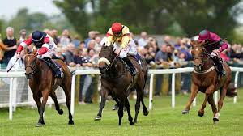
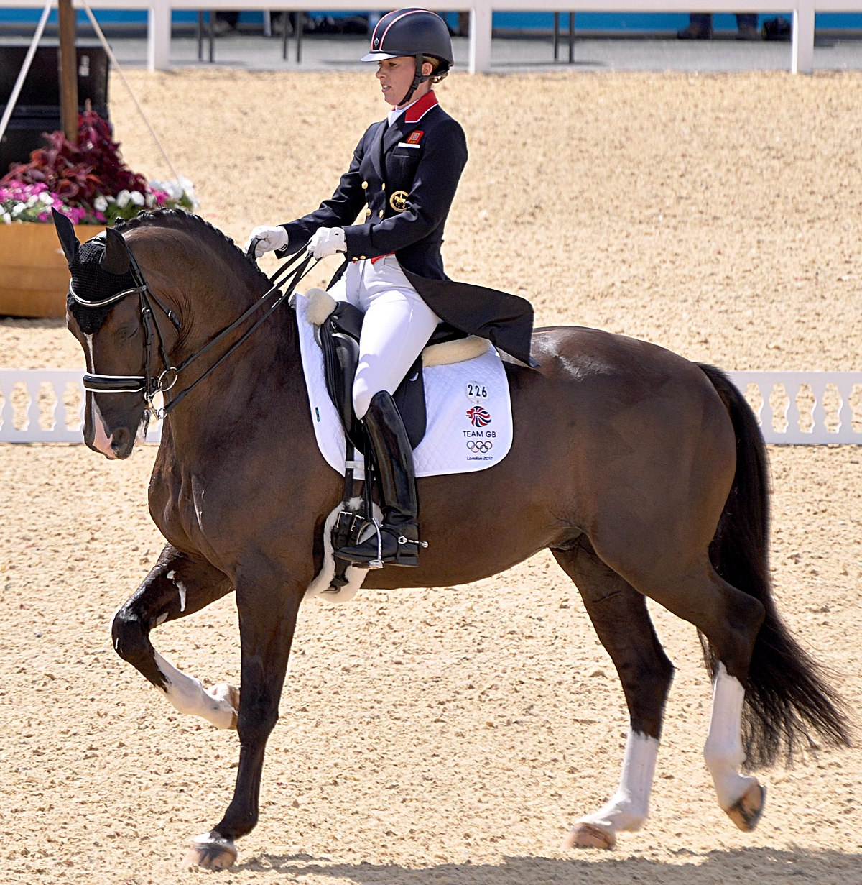
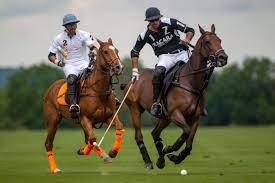

Olahraga berkuda adalah kegiatan fisik yang melibatkan seseorang untuk menunggangi dan mengendalikan kuda. Olahraga ini dapat dilakukan untuk tujuan rekreasi, olahraga, hingga kompetisi. Ada berbagai jenis olahraga berkuda mulai dari yang level elegan hingga ekstrem. Jenis olahraga berkuda pun beberapa di antaranya telah ada selama bertahun-tahun di dalam Olimpiade.
Berkuda merupakan olahraga yang sudah eksis sejak dulu. Olahraga ini kerap diadakan dalam ajang kompetisi pacuan kuda. Tidak hanya di gelanggang pacuan, kegiatan berkuda juga biasa ditawarkan di sejumlah tempat wisata. Selain menyenangkan, olahraga berkuda juga menyajikan pengalaman baru bagi Anda yang mencari olahraga tidak biasa. Olahraga berkuda banyak digemari orang karena menawarkan pengalaman menantag yang memacu adrenalin. Namun untuk melakukan olahraga berkuda tidaklah semudah hanya sekedar naik di punggung kuda
Untuk itu Lalu apa saja jenis olahrga berkuda?
1. Balap Pacuan Kuda
Balap pacuan kuda adalah jenis olahraga paling terkenal dalam dunia berkuda. Ini melibatkan kuda pacuan yang bersaing dalam balap di trek khusus dengan tujuan mencapai garis finish tercepat.
2. Dressage
Dressage adalah olahraga berkuda yang menekankan gerakan yang anggun dan terkontrol. Pengendara dan kuda mereka melakukan serangkaian gerakan dan tugas di arena dengan presisi tinggi.
3. Polo
Polo adalah olahraga tim yang dimainkan di atas kuda. Dua tim berusaha mencetak gol dengan memukul bola ke gawang lawan menggunakan tongkat polo, namun polo kurang populer dan di minati oleh masyarakat
Setelah mengetahui beberapa ragam jenis, inilah manfaat olahraga berkuda itu sendiri
1. Meningkatkan keseimbangan dan koordinasi
2. Mengurangi stres
3. memperkuat jantung
4. memiliki kemampuan mengendalikan diri yang baik.
Jika tertarik dengan olahraga ini, ada beberapa hal yang perlu diperhatikan sebelum menjalaninya. Salah satunya adalah kesehatan dan kebugaran dengan memastikan kalau dalam kondisi fisik yang baik sebelum berkuda.
rekomendasikan tempat berkuda di jakarta, Info selengkapnya, klik di sini